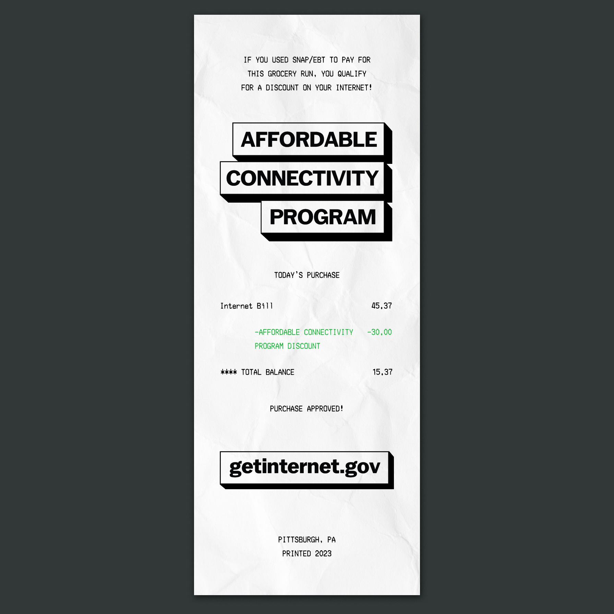
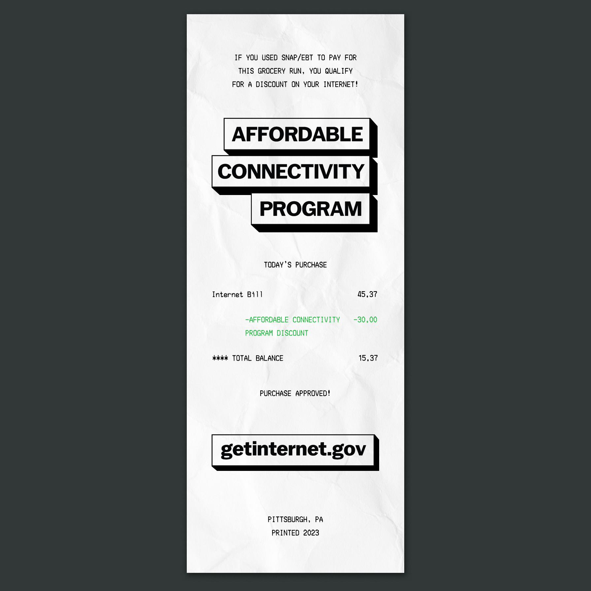

got internet?
Over 100,000 households in the Greater Pittsburgh Area qualify for the Affordable Connectivity Program (ACP), introduced to relieve internet and mobile data bills. Yet, these families still struggle with atrocious service bills, often unaware any suppport for internet service even exists. How can we effectively market the ACP to inner city families who need it most?
TIME: october - december 2023
ROLE: research, brand strategy, design
TOOLS: after effects, illustrator
COLLABORATORS: aadil ginwala
promotional video
promotional materials
 

the project brief
High-speed internet access is a necessity in any modern household and should be seen as a human right, as integral to our livelihood as food or water. Our job is to collaborate with the Office of the CIO at the University of Pittsburgh and design a campaign that sheds light on this issue, amplifying underrepresented voices and promoting relevant resources.
As a low income inner city kid myself, I know the government assistance process well, and my goal was to contextualize the ACP as a service like SNAP or Medicaid. My audience is high school students who are transitioning into adulthood and paying bills for the first time. Receipt ads leverage the habit of EBT SNAP users checking their balance on grocery receipts, and stickers provide a fun way to spread the word and destigmatize the program.
process
View my full project process here.